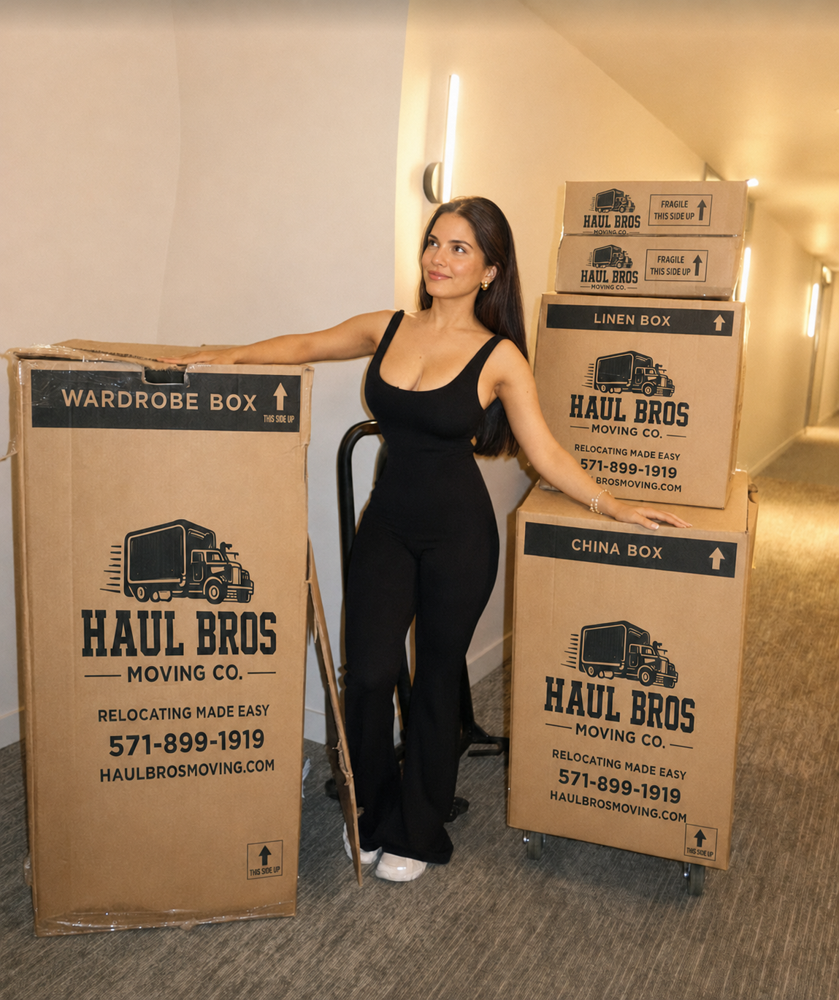

Moving to Springfield, VA: Your Complete Local Guide
Moving to Springfield, VA? Learn about local neighborhoods, Metro and VRE connections, parks, parking, and moving services from Haul Bros Moving Co LLC.

Moving to Springfield, Virginia? Springfield offers established neighborhoods, shopping and services, major commuter connections, and access to Fairfax County parks. Haul Bros Moving Co LLC is a Woodbridge-based full-service moving company serving Springfield and Northern Virginia communities on routes the company is authorized to serve. This guide helps you understand the area, prepare for a local move, and know what information to share when requesting a moving estimate.
In this guide
- Getting to know Springfield
- Neighborhoods and nearby communities
- Getting around Springfield
- Parks, shopping, and local destinations
- Moving to Springfield: a practical checklist
- How Haul Bros Moving Co LLC can help
- Springfield moving FAQs
Getting to Know Springfield, VA
Springfield is an unincorporated community in Fairfax County, Virginia. It is part of the Washington, D.C. metropolitan region and is known for its location near I-95, I-395, I-495, the Franconia–Springfield transit hub, and major shopping and employment centers.
“Springfield” can refer to a mailing address, a neighborhood, or a Fairfax County planning and service area. Nearby places such as Franconia, Kingstowne, West Springfield, Burke, and Fairfax Station are distinct communities, even though residents may think of them as part of the greater Springfield area. Confirm the precise location and county services for the home you are considering.
Housing in and around Springfield includes apartments, condominiums, townhomes, single-family homes, and planned communities. Access varies widely: one move may involve a reserved apartment elevator, while another may require navigating a townhouse staircase, a gated community, or a long driveway. Sharing these details in advance helps your movers recommend the right crew and plan the move accurately.
Springfield Neighborhoods and Nearby Communities
Springfield’s broader area includes a number of established communities:
- Central Springfield: Residential neighborhoods, local shopping, and access to Springfield Town Center and Springfield Plaza.
- North Springfield and Ravensworth: Established residential areas north and northeast of central Springfield.
- West Springfield: Neighborhoods west of the central Springfield corridor, with local parks and schools.
- Franconia and Kingstowne: Communities east and southeast of Springfield, with access to shops, services, and the Franconia–Springfield transit station.
- Newington and Saratoga: Residential and employment areas south of the main Springfield center, near major roads and commuter connections.
- Burke and Fairfax Station: Nearby communities that people may include in a broader Springfield search, though each has its own neighborhood identity and address details.
Fairfax County’s Springfield and Franconia supervisory districts cover different collections of communities. District boundaries are not the same as mailing addresses or neighborhood names. Check your exact address using Fairfax County’s official maps and address tools.
Haul Bros serves Springfield and nearby Northern Virginia
Haul Bros Moving Co LLC is based in Woodbridge and serves customers moving within Springfield and to nearby Northern Virginia communities, subject to route authorization, availability, and the written service agreement. When requesting a quote, provide both full addresses and ZIP codes. This helps us confirm the route and understand the access needs at each location.
Getting Around Springfield
Major roads and traffic
I-95, I-395, and I-495 converge near Springfield, while Fairfax County Parkway, Old Keene Mill Road, Franconia–Springfield Parkway, Backlick Road, and other local roads connect neighborhoods and activity centers. Traffic can be heavy, especially during weekday commuting periods and near major interchanges. Roadwork, incidents, and weather can change conditions, so check current traffic before travel.
For a moving estimate, consider the entire job—not just the distance between addresses. Building access, truck parking, carrying distance, elevator use, loading, and unloading all affect the time needed. Let Haul Bros know about parking restrictions, gated entries, low clearances, and community move-in policies before moving day.
Metro, VRE, and bus connections
The Franconia–Springfield station is a major regional transit connection. It serves the Blue Line of Metrorail and the Fredericksburg Line of Virginia Railway Express (VRE), with bus connections from Fairfax Connector and other providers. Fairfax County also lists commuter parking at the transit station and other local park-and-ride locations. Verify current parking rates, access, schedules, and service alerts before you travel.
The Backlick Road VRE station is another rail option in the Springfield area. Fairfax Connector operates routes connecting neighborhoods and destinations with transit hubs. Routes, service hours, fares, and station conditions change, so check current information directly with WMATA, VRE, and Fairfax Connector before planning your commute.
Parking and move-day truck access
Commuter garages and shopping centers have their own parking policies, and those rules do not automatically allow a moving truck to park there. At homes and apartment communities, confirm which entrance the crew should use, whether a loading area must be reserved, and whether the truck can safely fit and turn around.
Parks, Shopping, and Local Destinations
Lake Accotink Park
Lake Accotink Park is a large Fairfax County park with a lake, trails, picnic areas, and seasonal recreation. Its activities and facilities can vary by season and current operating schedule. Check the Park Authority’s latest updates before visiting.
South Run Rec Center and nearby trails
South Run Rec Center offers recreation facilities, fitness and aquatic programs, fields, and access to nearby trails. Fairfax County notes trail connections from South Run toward Burke Lake Park and Lake Mercer.
Springfield Town Center and Springfield Plaza
Springfield Town Center and Springfield Plaza are major shopping and dining destinations serving Springfield and nearby communities. The area also has neighborhood shopping centers and services along Old Keene Mill Road, Backlick Road, and other corridors. These areas can experience increased traffic during busy shopping periods, weekends, and special events.
Community services and daily errands
Springfield residents use Fairfax County libraries, community centers, schools, recreation facilities, and healthcare services spread across the area. When choosing a home, check the locations and current details most relevant to your household, and verify school assignments directly with the school division.
Moving to Springfield: A Practical Checklist
1. Confirm the full address
Check the complete street address, unit or building number, ZIP code, and community name. Nearby locations may share a Springfield mailing address while falling in different neighborhoods or service areas. Provide both addresses to your mover to confirm the move plan.
2. Ask your property manager about move-in rules
For an apartment, condo, or managed community, ask about:
- Elevator reservations and move-in hours
- Loading docks or designated moving spaces
- Truck parking and access approvals
- Gate codes and visitor check-in
- Certificates of insurance or other required forms
- Rules for weekends, holidays, or large trucks
- Height limits, tight turns, and alternate entrances
Send any building documents or access instructions to your moving company ahead of time.
3. Share a complete inventory
List the major furniture, appliances, boxes, garage items, storage contents, and outdoor items you plan to move. Mention heavy or unusual items such as safes, pianos, treadmills, oversized mirrors, or large sectionals. Photos or a video walkthrough can help clarify volume and access.
4. Note stairs, elevators, and long carries
Tell your mover how many stair flights are involved, whether elevators are available, and how far the truck will be from the entrance. If parking is restricted or a long walk is unavoidable, include that information when you request the estimate.
5. Reserve parking and access
Arrange legal truck parking close to both properties whenever possible. If the community has a loading area or reserved space, book it early. Keep the truck route clear of personal vehicles and provide gate or call-box instructions.
6. Plan around traffic and timing
Allow time for loading and unloading as well as travel. Coordinate keys, building access, and arrival timing at both locations. Check traffic around I-95, I-395, I-495, and local routes on move day.
7. Keep personal essentials with you
Set aside medications, identification, keys, valuables, important documents, chargers, and first-night supplies. Keep them with you rather than loading them onto the moving truck.
8. Get a written estimate
Make sure your written estimate states the crew size, truck, rate structure, how additional time is billed, included equipment, requested add-on services, deposit terms, and conditions that could change the total. Give each mover the same inventory and access details for a fair comparison.
How Haul Bros Moving Co LLC Can Help
Haul Bros Moving Co LLC is a Woodbridge-based full-service moving company serving Springfield and surrounding Northern Virginia communities on routes the company is authorized to serve. We assist with residential and commercial moves from apartments, townhomes, single-family homes, offices, and storage units.
Depending on the move and the written estimate, services may include:
- A moving crew and truck
- Loading, transportation, and unloading
- Labor-only loading or unloading assistance for qualifying moves
- Packing and unpacking support
- Furniture disassembly and reassembly as agreed
- Moving blankets, shrink wrap, dollies, and floor protection for qualifying moves
- Help coordinating a move that includes a storage unit
Published local moving packages
See our published local starting packages:
| Crew and truck | First 2 hours | Each additional hour |
|---|---|---|
| 2 movers + 26-foot truck | $395 | $159 |
| 3 movers + 26-foot truck | $495 | $189 |
| 4 movers + 26-foot truck | $695 | $249 |
The appropriate crew depends on inventory, access, and requested services—not bedroom count alone. Request a current written estimate for your specific addresses and move details. Confirm any packing services, materials, specialty-item handling, and route-specific requirements in that estimate.
To prepare an estimate, share your move date, pickup and delivery addresses, inventory or photos, stairs or elevator details, parking instructions, and packing needs.
Contact Haul Bros Moving Co LLC:
Call or text: 571-899-1919
USDOT: 4497497
Haul Bros Moving Co LLC — Relocating made easy.
Frequently Asked Questions About Moving to Springfield, VA
Is Springfield, VA a good place to live?
That depends on your budget, commute, housing needs, and lifestyle. Springfield offers established neighborhoods, shopping, parks, and major transit and road connections. Visit the specific area you are considering and check current commute, school, housing, and service details before choosing an address.
Is Springfield, Virginia in Fairfax County?
Yes. Springfield, Virginia is an unincorporated community in Fairfax County. The name may also refer to a mailing area or a broader collection of nearby communities. Verify the county and exact location for your address.
What neighborhoods are near Springfield, VA?
Nearby communities include Franconia, Kingstowne, North Springfield, West Springfield, Ravensworth, Newington, Saratoga, Burke, and Fairfax Station. These are distinct places, and their boundaries do not always match postal names or county district lines.
How much do movers cost in Springfield, VA?
The cost depends on crew size, total time, inventory, access, and requested services. Haul Bros’ published local packages start at $395 for the first two hours with two movers and a 26-foot truck, followed by $159 per additional hour. Request a current written estimate for your move.
Does Haul Bros Moving Co LLC serve Springfield?
Haul Bros serves Springfield and nearby Northern Virginia communities, subject to route authorization, availability, and the written service agreement. Contact us with both addresses and your preferred date to confirm service.
How far in advance should I book movers in Springfield?
Contact your mover as soon as your date is reasonably firm. Weekends, month-end dates, summer moves, and apartment communities requiring elevator or loading reservations can need extra planning. For short-notice moves, ask Haul Bros about current crew and truck availability.
Does the Franconia–Springfield station have Metro and VRE service?
Yes. The Franconia–Springfield transit station serves the Metrorail Blue Line and VRE’s Fredericksburg Line, with bus connections. Check current schedules, parking, and service alerts directly with WMATA, VRE, and Fairfax Connector.
Do Springfield apartments require elevator reservations?
Some apartment and condo communities require advance reservations, loading-area appointments, move-in paperwork, or a certificate of insurance. Ask the property manager for current requirements and share them with your moving company before the move.
What information should I give movers for a quote?
Provide the move date, complete addresses, home type, inventory, stairs or elevators, parking and access details, gate instructions, long carries, and any heavy or fragile items. Photos or a video walkthrough can help clarify the scope.
Can Haul Bros move a small apartment or just a few items?
Haul Bros can discuss qualifying small moves and labor-only assistance. Share the item list, addresses, stairs or elevators, and whether you need a truck so we can confirm availability and provide the appropriate estimate.
Does Haul Bros offer packing services in Springfield?
Packing support may be available depending on your move and requested scope. Tell us whether you need full packing, help with selected rooms, or assistance with fragile items. Confirm labor and material pricing in your written estimate.
What should I do the day before moving?
Finish packing what you plan to pack yourself, label boxes by room, set aside essentials and valuables, confirm parking and building access, reserve an elevator if required, and send gate or call-box instructions to your mover.
Plan Your Springfield Move with Haul Bros
Moving to, from, or within Springfield? Contact us to confirm route availability and request a written estimate. Explore apartment moving services or prepare your moving inventory.